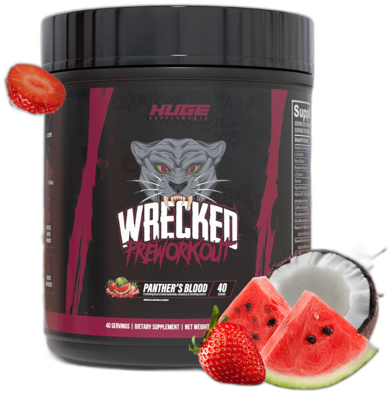

Product imagery supplied by the retailer. Packaging may vary — verify the Supplement Facts panel on the container you receive.
Huge Supplements
Wrecked
High stimulant content · Read safety guidance
Our analysis — editorial take, not from the label
A 14-ingredient, 2-scoop-max formula stacking 375 mg of caffeine with citrulline, beta-alanine, and alpha-GPC at amounts inside commonly studied ranges - dosed and priced for experienced stimulant users, not beginners.
- Caffeine
- 375 mg
- Citrulline
- 10 g
- Beta-alanine
- 6.4 g
- Servings
- 20
- Price tier
- Premium
Price tier: Premium · relative cost per full serving across this database
We don't list dollar prices — they change daily and go stale. Check the live price instead:
View current price Compare all 38 formulasAffiliate link — Scoop Sense may earn a commission at no additional cost to you.
Seven flavors including Blue Razz, Panther's Blood, Watermelon, and Bomb Popsicle.
Label verified: July 2026 · View supplement facts image
Label data
Per full serving · 20 servings per container · from the manufacturer's panel
| Caffeine | 375 mg |
| L-Citrulline | 10 g |
| Beta-Alanine | 6.4 g |
| Alpha-GPC 50% | 1 g |
| Proprietary blend | No |
Primary label source: Huge Supplements - Wrecked product page (official) · verified July 2026
Product details
What is Huge Supplements Wrecked?
A 14-ingredient, 2-scoop-max formula stacking 375 mg of caffeine with citrulline, beta-alanine, and alpha-GPC at amounts inside commonly studied ranges - dosed and priced for experienced stimulant users, not beginners. It sits in the high stim tier of the Scoop Sense database, which spans 0–400 mg of caffeine per serving. Everything on this page comes from the manufacturer's supplement facts panel as of July 2026 — never from the marketing page.
Key ingredients & studied doses
- L-Citrulline · 10 g. At the top of (or above) the 6-8 g range typically used in citrulline pump research.
- Beta-Alanine · 6.4 g. Roughly double the ~3.2 g/day dose used in most beta-alanine endurance studies; expect a stronger tingling (paresthesia) response.
- Caffeine (Anhydrous + Di-Caffeine Malate) · 375 mg. 300 mg caffeine anhydrous plus 100 mg di-caffeine malate (about 75% caffeine) totals 375 mg at the full 2-scoop dose, roughly 4 cups of coffee.
- Alpha-GPC 50% · 1 g. The label lists 1,000 mg of a 50% alpha-GPC grade, which yields roughly 500 mg of actual alpha-GPC - inside the 300-600 mg range used in most cognitive-focus studies.
Cautions
- Full labeled serving is 2 scoops; 1 scoop halves every number on this label, including caffeine (about 188 mg).
- 375 mg caffeine at full dose is roughly 4 cups of coffee - brand itself recommends first-time users start with a half scoop.
- 6.4 g beta-alanine will likely cause a tingling (paresthesia) sensation in the hands and face.
Flavors & sweetener
Seven flavors including Blue Razz, Panther's Blood, Watermelon, and Bomb Popsicle.
Who it's best for
Experienced high-stimulant users only — not a sensible first pre-workout. Derived from the label figures above — not medical advice.
How we log this label
Every entry is built the same way: we read the current supplement facts panel, log each disclosed dose, compare it against the amounts used in published research, flag proprietary blends, and state the cautions plainly. The full methodology explains each step.
Common questions about Huge Supplements Wrecked
How much caffeine is in Huge Supplements Wrecked?
375 mg per full labeled serving — roughly 3.9 small cups of coffee. Within the Scoop Sense database (0–400 mg per serving) that places it in the high stim tier. The FDA cites about 400 mg per day as an amount generally not associated with negative effects in healthy adults, and coffee, tea, and energy drinks count toward the same total.
Why does Huge Supplements Wrecked make my skin tingle?
The 6.4 g of beta-alanine. The prickling (paresthesia) in the face, neck, and hands is generally considered harmless, is dose-dependent, and fades on its own — typically within about an hour. Most beta-alanine studies use 3.2 g per day.
Does Huge Supplements Wrecked disclose every dose?
Yes — the label lists an individual amount for each ingredient, with no proprietary blends. That is what the "label fully disclosed" tag on Scoop Sense means, and it is what lets each dose be compared against the amounts used in published research.
Do the numbers for Huge Supplements Wrecked assume one scoop or two?
All figures on this page are per full labeled serving. Full labeled serving is 2 scoops; 1 scoop halves every number on this label, including caffeine (about 188 mg)..
Reviews
Scoop Sense doesn't collect user reviews, and we won't invent them. Our editorial read: A 14-ingredient, 2-scoop-max formula stacking 375 mg of caffeine with citrulline, beta-alanine, and alpha-GPC at amounts inside commonly studied ranges - dosed and priced for experienced stimulant users, not beginners.
Read customer reviews on AmazonAffiliate link — Scoop Sense may earn a commission at no additional cost to you.